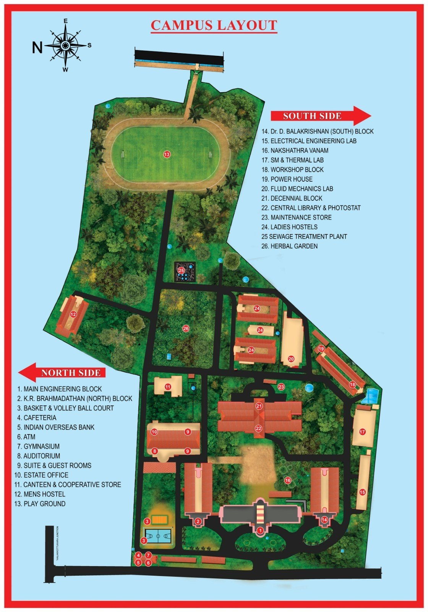

Vidya Academy of Science & Technology
An engineering college managed by Vidya International Charitable Trust, working towards the Sustainable Development Goals.
Could not load data. Open the site through a web server (see README).
Institution overview

Campus layout
The campus is laid out around green spaces, a sports ground and on-site utilities. Numbers refer to the map.
Places that support the SDGs
- 8 Auditorium: rooftop solar, 100 kWp
- 14 Dr. D. Balakrishnan (South) Block: rooftop solar, 15 kWp
- 25 Sewage treatment plant
- 16 Nakshathra Vanam
- 26 Herbal garden
- 13 Playground and 2, 3 sports courts
Solar installations are described on the Solar page.
Full key to the map
- Main Engineering Block
- K.R. Brahmadathan (North) Block
- Basket and volley ball court
- Cafeteria
- Indian Overseas Bank
- ATM
- Gymnasium
- Auditorium
- Suite and guest rooms
- Estate office
- Canteen and cooperative store
- Men's hostel
- Playground
- Dr. D. Balakrishnan (South) Block
- Electrical engineering lab
- Nakshathra Vanam
- SM and thermal lab
- Workshop block
- Power house
- Fluid mechanics lab
- Decennial block
- Central library and photostat
- Maintenance store
- Ladies' hostels
- Sewage treatment plant
- Herbal garden